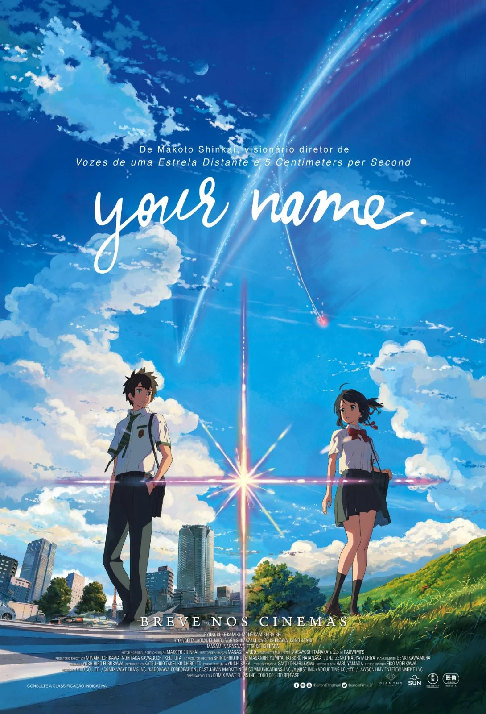

Your Name (2016)

Diretor: Makoto Shinkai
Atores Principais: Ryunosuke Kamiki, Mone Kamishiraishi, Ryo Narita e Aoi Yuki
Gênero: Animação / Drama / Fantasia / Romance
Censura: Livre
Duração: 106 minutos (1h 46min)
Sinopse
Mitsuha é uma garota do campo que sonha em viver na agitação de Tóquio, enquanto Taki é um jovem da cidade que estuda e trabalha duro. Misteriosamente, os dois começam a trocar de corpos durante o sono. Conforme aprendem a viver a vida um do outro e deixam bilhetes para se comunicar, uma conexão profunda se forma entre eles. No entanto, um evento cósmico inesperado ameaça separá-los para sempre.
← Voltar ao catálogo